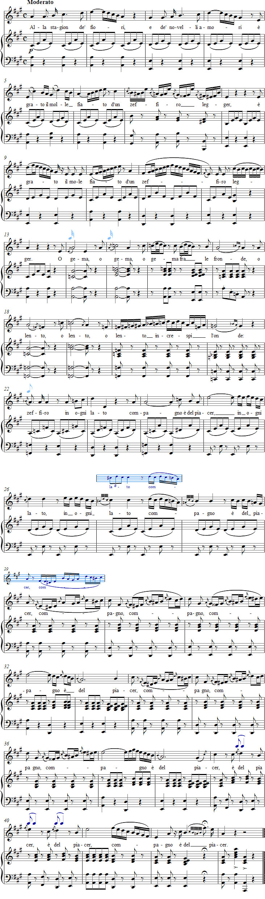

Vaccaj: Tehtävä 15
Kuuntele äänite
Nuotit

Sanat
Riepilogo
Yhteenveto
on mieluisa kukkien ja uusien
rakkauksien vuodenajalle.
Puhaltaapa se lehvien lomassa
taikka hitaasti taivuttaa aaltoja,
länsituuli joka taholla on
mielihyvän seuralainen.
Esitysohjeet
Tämä laulukoulun viimeinen tehtävä on yhteenveto kaikesta opitusta. Laulussa voidaan soveltaa aiemmin opittuja tekniikoita aarian tapaan.
Ohjeita harjoitteluun
Aloita yksinkertaistetusta melodiasta tahdeissa 1–29 ja laula sopivilla tavuilla. Lisää seuraavaksi joitakin melodiasäveliä tahdeissa 11–12, 17, 21–24 ja 26–28. Yhdistä sitten teksti melodiaan ja ota mukaan pianosäestys. Hyppää takaisin alkuun tahdista 29 ja anna pianistin soittaa ensimmäinen tahti välisoittona. Laula vasta nyt koko nuottikuva sellaisenaan ja kuvittele se improvisoinniksi melodisen rungon päälle.
Kokeile seuraavia ehdotuksia:
- Tahdit 2, 4, 6 jne.: Käytä legaton sijaan myös staccatoa ja marcatoa harjoitellessasi juoksutuksia.
- Tahti 7: Nuottikuvio on hyvin vaativa. Jätä viimeinen sävel aluksi huomiotta ja laula jäljellä olevat neljä kuudestoistaosaa kaksoisheleenä. Poista sen jälkeen puolestaan etuhelenuotti ja pidä jäljellä olevat neljä kaksoishelettä. Laula lopuksi myös etuhelenuotti. Koska se edeltää lyhyiden sävelten ryhmää, se pitää esittää lyhyenä etuheleenä.
- Tahti 12: Pidennä trilli koko tahdin mittaiseksi ja lopeta se sävelillä sol ja la.
- Tahdit 14–15: Tullaksesi varmemmaksi portamento di sotton ja tavallisen portamenton välisestä erosta, kokeile ”liukua” kohotahdin vokaalilla.
- Tahdit 16–17: Jälkiheleiden terssiä ei saa korostaa.
- Tahdit 18–19: Muista, että portamentoa ei pidä laulaa niin, että lento kuulostaa le-entolta.
- Tahti 20: Tee kevyt marcato jokaisen neljän kolmaskymmeneskahdesosanuottiryhmän ensimmäisellä sävelellä.
- Tahdit 22 ja 26: Pitkä etuhele ottaa koko päänuotin pituuden.
- Tahdit 27–28: Tässäkin ”mordentti” korvaa päänuotin ja se pitää esittää kahdeksasosatriolina.
Laulu Alla stagion loppuu niin sanottuun strettaan, joka tarkoittaa ”vaikuttavasti huipentuvaa loppuosaa”. Melodiarungon selkeä hahmottaminen on suureksi avuksi. Laula siis tahdit 29–31 ja 34–36 ensin seuraavilla sävelillä:
re – sol – si – mi
mi – la – do2 – fa
fa – la – re2 – re2
Koska tahdeissa 33 ja 38 oleva päänuotti on pisteellisenä jaollinen kolmella, sen etuheleen kesto on vain kolmasosa siitä.
Tempon tulee harjoiteltaessa olla hyvin hillitty (neljäsosa noin M.M. 72).
Laulun alkupuolella Vaccaj on tapaansa huolehtinut siitä, että fraasien välissä on runsaasti taukoja hengitystä varten. Sitä vastoin tahdeissa 29–39 on vaikea löytää kunnollista paikkaa hengittää kunnolla. Tässä laulunopettajan täytyy siis merkitä hengityspaikat, muuten laulun lopusta tulee lähes mahdoton.
Yleisesti ottaen voidaan hengittää jokaisen compagnon jälkeen tahdeissa 30, 31, 35 ja 36 ja tietysti tauolla tahdissa 34. Tarvittaessa voidaan hengittää tahdin 38 ensimmäisen neljäsosan jälkeen. Kohotin mukaan on sanan keskellä voi hengittää, jos se yhdistyy synkooppiin.
Metodo praticon viimeisessä laulussa voidaan soveltaa ”pehmeää hengitystä”. Jo toisen tahdin ensimmäinen juoksutus vaatii toisenlaista keveyttä kuin hitaampi asteikko fraasin alussa, ja ilman ilmanpaineen joustavuutta on tuskin mahdollista laulaa esimerkiksi tahteja 7, 16 ja 20.
Myös pianistin joustavuus on toinen edellytys sille, että laulu toimii. Pianistin täytyy olla valmis antamaan laulajalle ylimääräistä aikaa kaikissa vaikeammissa kohdissa ja sitä paitsi ”hengittää mukana” tahdeissa 29–39.
Paras perusnyanssi opiskeltaessa on mezzopiano.
Ajatuksia tulkinnasta
Alla stagion -laulun asettamista korkeista lauluteknisistä vaatimuksista huolimatta laulajan tulee mahdollisimman pian yrittää suhteuttaa korukuviot vastaavien sanojen merkityksiin. Asteikot, etuheleet, ”liukumat” ynnä muut täytyy laulaa niin, että kuulijalle käy selvästi ilmi, että laulaja haluaa viehkeästi vahvistaa sanojen fiori, amori, zeffiro, grato jne. sisältöä. Myös tahtien 29–31 ja 34–36 vaikeasti laulettavalla kuviolla tulee olla yhteys ajatukseen ”tuulen syleilystä”.
Yritä jo varhain sitoa yhteen ajatusfraasit ja selventää riimittelyä.
Vasta sitten, kun laulaja hallitsee kutakuinkin koko laulun rauhallisessa tempossa ja hillityllä volyymillä, hän voi antaa sille hieman selkeämmän luonteen siten, että ”antaa länsituulen puhaltaa nopeammin ja voimakkaammin”.
Esityksestä ei saa kuitenkaan koskaan tulla niin virtuoosimainen, että sävellys menettää viehätyksensä.
Forshufvud, G. 1994. Con lieve fiato. Lärarhandledning till Nicola Vaccajs Metodo pratico. Göteborgs universitetet.